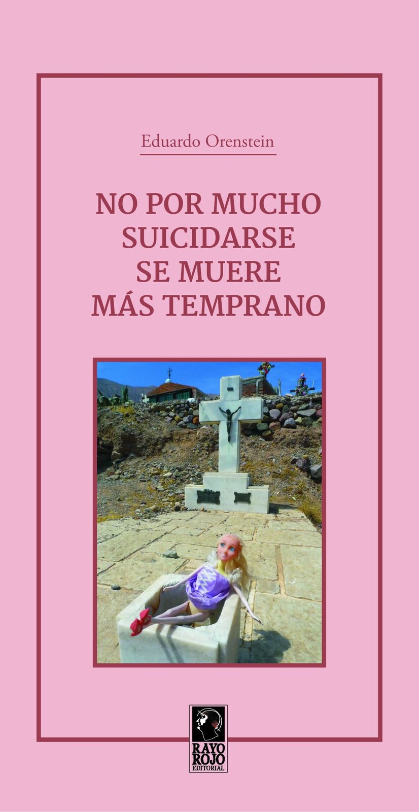

No por Mucho Suicidarse se Muere más Temprano
Por Eduardo Orenstein
10 × 18 cm · Tapa blanda con solapas · 66 pp.
El éxito en un suicidio puede ser tan esquivo como el de un escritor, que haría todo lo posible por lograrlo, así le cueste la vida.
Comprar